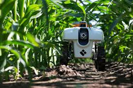

Exemplos
-
Assistentes Virtuais
São os exemplos mais comuns, pois fazem parte do nosso cotidiano. Esses assistentes são desenvolvidos para interagir com os usuários por meio de reconhecimento de voz e processamento de linguagem natural.
-
Carros Autônomos
Veículos autônomos utilizam inteligência artificial e câmeras inteligentes para mapear o ambiente ao seu redor e tomar decisões em tempo real. A IA coleta dados sobre a rua, posicionamento de pedestres, presença de placas de trânsito, outros veículos e outros elementos do entorno, permitindo que o veículo navegue de forma segura e eficiente.
-
Robótica
Na robótica, a inteligência artificial aprimora a eficiência no controle de movimento e navegação de robôs, especialmente em ambientes com obstáculos, como fábricas e indústrias. A IA permite que os robôs tomem decisões autônomas e se adaptem a mudanças no ambiente, aumentando a precisão e a produtividade. Um exemplo é o robozinho Tinbot é um projeto que surgiu em um programa de aceleração de startups do Brasil, o Ciclo de Capacitação 2018, do InovAtiva.

-
Atendimento ao Cliente
A inteligência artificial tem se tornado uma ferramenta essencial no atendimento ao cliente. Com o uso de chatbots em sites e e-commerces, a IA é capaz de responder perguntas, fornecer detalhes e solucionar questões dos consumidores. Além disso, a tecnologia pode ser aplicada para oferecer um atendimento personalizado, especialmente após a compra, aprimorando a experiência do cliente.
-
Videogames
Nos jogos, a IA é frequentemente usada com aprendizado de máquina para estudar o comportamento do jogador. Ao analisar o nível de habilidade e conhecimento do usuário, o jogo ajusta gradualmente a dificuldade, adaptando-se ao progresso do jogador e proporcionando uma experiência mais desafiadora. No Man's Sky e Minecraft são exemplos populares de videogames que utilizam PCG (Conteúdo Gerado Proceduralmente) com apoio da IA


-
Agricultura
A inteligência artificial na agricultura oferece grande suporte aos produtores rurais, permitindo a detecção de pragas, doenças e deficiências nutricionais nas plantas. Com essa tecnologia, é possível otimizar a produção, melhorar o manejo das lavouras e aumentar a eficiência na utilização de recursos, contribuindo significativamente para uma produção de alimentos mais sustentável e eficaz.
